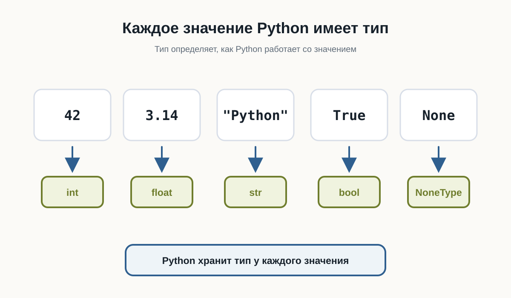
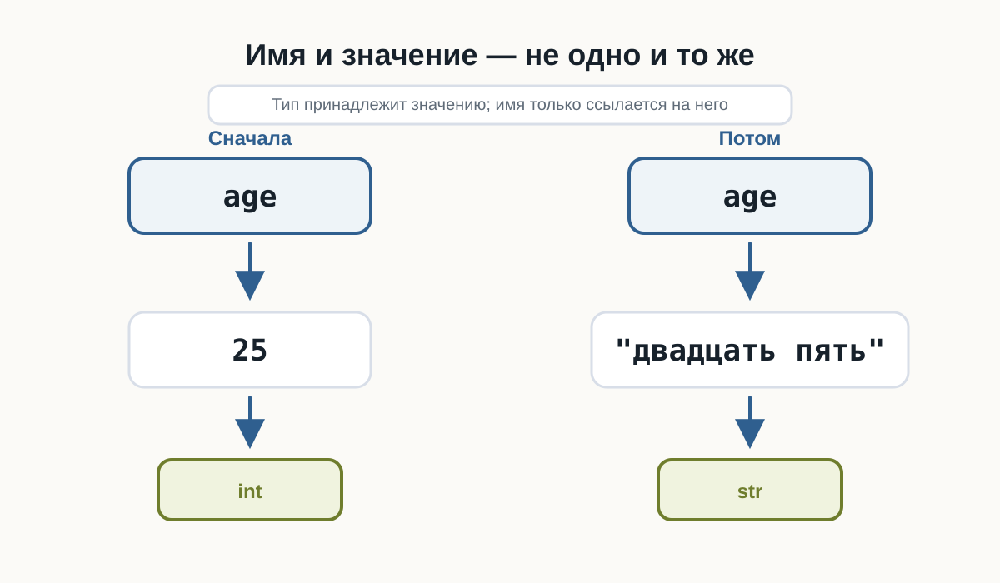
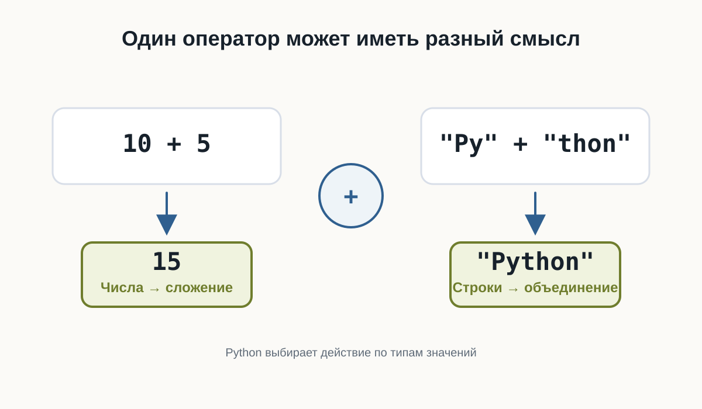
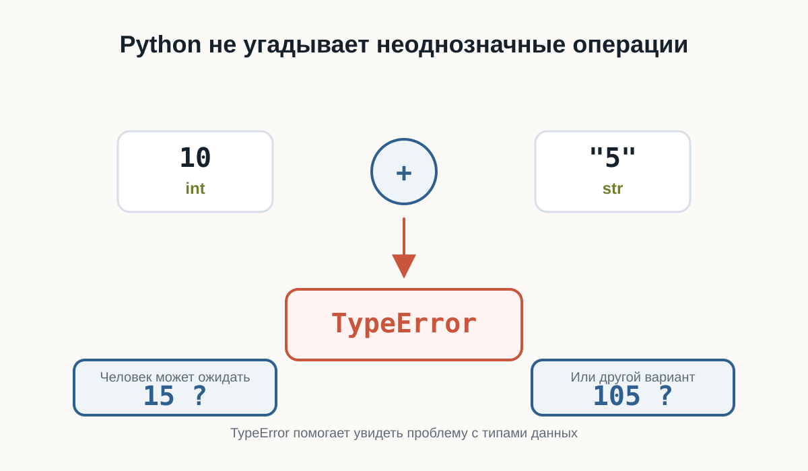
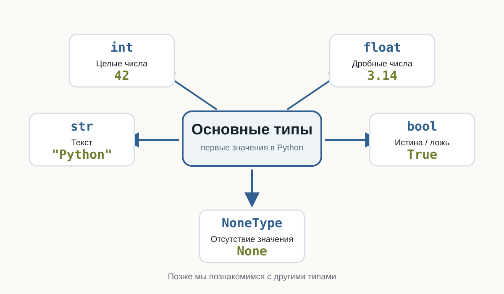

3.2 Типы данных
Главный вопрос главы:
Как Python понимает, что значение является числом, текстом или логическим значением — и почему это важно?
В предыдущей главе мы познакомились с переменными.
Мы уже можем сохранить значение:
name = "Анна"
age = 25Но эти два значения отличаются друг от друга.
"Анна" — текст.
25 — число.
Для человека разница очевидна.
Но Python тоже должен её понимать.
Почему?
Потому что с разными данными можно выполнять разные действия.
Например, числа можно складывать:
10 + 5а текст можно объединять:
"Py" + "thon"В обоих случаях используется знак +, но результат получается разным.
Чтобы понимать, как работать со значением, Python хранит информацию о его типе.
Что такое тип данных
Тип данных описывает, что представляет собой значение и какие операции с ним допустимы.
Рассмотрим несколько значений:
42
3.14
"Python"
TrueДля человека это:
- целое число;
- дробное число;
- текст;
- логическое значение.
Python различает их примерно так же.
У каждого значения есть свой тип.
42 → int
3.14 → float
"Python" → str
True → boolНазвания int, float, str и bool мы скоро разберём подробнее.
Пока важна сама идея:
Тип сообщает Python, что это за значение и как с ним можно работать.

Тип принадлежит значению
Здесь есть важный момент.
Посмотрим на код:
age = 25Иногда говорят:
age— переменная типаint.
Для первого знакомства это допустимое упрощение.
Но точнее будет сказать так:
Имя
ageсейчас ссылается на значение25, а значение25имеет типint.
Почему это важно?
Потому что позже мы можем написать:
age = 25
age = "двадцать пять"Сначала имя age связано с целым числом.
Затем — с текстом.
Само имя не навсегда привязано к одному типу.

Python определяет тип автоматически
В некоторых языках программист заранее указывает тип переменной.
Например, концептуально это может выглядеть так:
целое число age = 25В Python обычно достаточно написать:
age = 25Python видит значение 25 и сам определяет его тип.
То же самое происходит здесь:
price = 19.99
language = "Python"
is_learning = TruePython определит:
19.99 → float
"Python" → str
True → boolНам не нужно отдельно сообщать ему тип каждого значения.
Такой подход делает первые программы компактнее.
Как узнать тип значения
Python предоставляет встроенную функцию type().
Например:
print(type(42))Результат будет примерно таким:
<class 'int'>Для текста:
print(type("Python"))получим:
<class 'str'>Можно проверить и значение, связанное с переменной:
age = 25
print(type(age))Результат:
<class 'int'>Пока слово class можно не разбирать.
Мы вернёмся к классам значительно позже.
Сейчас достаточно смотреть на часть:
intили:
strОна сообщает тип значения.
Создайте несколько переменных:
age = 25
height = 1.82
name = "Анна"
is_student = TrueИспользуйте type() и посмотрите тип каждого значения.
Попробуйте заранее предположить результат до запуска программы.
Целые числа: int
Целые числа в Python имеют тип:
intНазвание происходит от английского слова integer — целое число.
Примеры:
0
1
42
-10
1000000Все они имеют тип int.
print(type(42))
print(type(-10))Целые числа можно использовать в арифметических операциях:
a = 10
b = 3
print(a + b)
print(a - b)
print(a * b)Результат:
13
7
30Размер числа при этом не определяет другой тип.
Например:
small = 10
large = 1000000000000000000000000000000Оба значения являются int.
Дробные числа: float
Для чисел с дробной частью Python использует тип:
floatНапример:
3.14
0.5
-10.25Важно использовать точку, а не запятую:
price = 19.99Проверим тип:
print(type(price))Результат:
<class 'float'>int и float — разные типы, но оба представляют числа.
Поэтому Python позволяет использовать их вместе:
total = 10 + 2.5
print(total)Результат:
12.5Об особенностях вычислений с дробными числами мы поговорим отдельно, когда начнём глубже работать с числами.
Текст: str
Текстовые значения имеют тип:
strНазвание происходит от слова string — строка.
Строка записывается в кавычках:
"Python"или:
'Python'Например:
name = "Анна"
language = "Python"
print(type(name))
print(type(language))Оба значения имеют тип str.
Очень важно понимать разницу между:
42и:
"42"Выглядят они похоже.
Но первое значение — число:
intа второе — текст:
strДля Python это принципиально разные данные.
Одинаково выглядит — разный смысл
Рассмотрим:
number = 42
text = "42"Если вывести значения:
print(number)
print(text)мы увидим:
42
42На экране они выглядят одинаково.
Но проверим тип:
print(type(number))
print(type(text))Получим:
<class 'int'>
<class 'str'>Именно тип определяет, какие действия Python будет выполнять с этими значениями.
Один оператор может работать по-разному
Посмотрим на числа:
print(10 + 5)Результат:
15Python выполняет сложение.
Теперь используем строки:
print("Py" + "thon")Результат:
PythonЗнак + остался тем же.
Но операция изменилась.
Для чисел:
10 + 5 → сложениеДля строк:
"Py" + "thon" → объединениеPython может выбрать правильное действие именно потому, что знает тип каждого значения.

Что произойдёт, если типы несовместимы
Попробуем выполнить:
print(10 + "5")Человек может подумать:
Наверное, получится
15.
Но Python не делает таких предположений.
10 имеет тип int.
"5" имеет тип str.
Python не знает, хотим ли мы получить:
15или:
105Поэтому программа завершится ошибкой.
Пример сообщения:
TypeErrorНазвание уже подсказывает причину:
ошибка связана с типами данных.
Это полезное поведение.
Python не пытается угадывать намерения программиста там, где результат может быть неоднозначным.

Логические значения: bool
Иногда программе нужно хранить не число и не текст, а ответ на простой вопрос:
Да или нет?
Для этого существует тип:
boolУ него всего два значения:
True
FalseНапример:
is_student = True
is_admin = FalseПроверим:
print(type(is_student))Результат:
<class 'bool'>Обратите внимание: True и False пишутся с большой буквы.
Это специальные значения Python.
Нельзя писать:
trueили:
falseесли мы хотим получить логические значения Python.
Зачем нужны True и False
Логические значения особенно важны, когда программа должна принимать решения.
Например:
is_logged_in = TrueПозже программа сможет проверить это значение и решить:
показать страницуили:
попросить пользователя войтиПока мы только научимся хранить такие значения.
Условия и принятие решений разберём в отдельной главе.
Отсутствие значения: None
Иногда нужно явно показать:
Здесь пока нет значения.
Для этого Python предоставляет специальное значение:
NoneНапример:
result = NoneПроверим его тип:
print(type(result))Получим:
<class 'NoneType'>None — это не:
0не:
""и не:
FalseЭто отдельное специальное значение.
Оно означает отсутствие обычного значения.
Позже мы встретим None при работе с функциями, поиском данных и многими библиотеками Python.
Не путайте значение и его представление
Рассмотрим ещё один пример:
age = 25Здесь 25 — число.
Но после:
print(age)терминал показывает символы:
25Это не означает, что значение внутри программы стало строкой.
print() просто превращает значение в форму, которую можно показать человеку.
Поэтому внешний вид данных на экране не всегда говорит об их типе внутри программы.
Если сомневаетесь — используйте:
type()Тип может измениться при новом присваивании
Рассмотрим:
value = 10
print(type(value))Получим:
<class 'int'>Теперь присвоим этому имени другое значение:
value = "Python"
print(type(value))Получим:
<class 'str'>Это нормальное поведение Python.
Имя value сначала ссылалось на число, затем — на строку.
Такое свойство связано с динамической типизацией Python.
Термин полезно знать, но пока достаточно понимать сам принцип:
Тип определяется значением во время выполнения программы.
Динамическая типизация не означает отсутствие типов
Иногда можно услышать:
В Python нет типов.
Это неправильно.
Типы в Python есть, и они играют очень важную роль.
Например:
10 + "5"не работает именно потому, что Python различает int и str.
Особенность Python в другом:
Обычно программисту не нужно заранее объявлять тип переменной.
Python определяет тип значения во время выполнения.
Основные типы, которые мы уже встретили
На этом этапе достаточно знать пять типов:
| Тип | Что хранит | Пример |
|---|---|---|
int |
целые числа | 42 |
float |
дробные числа | 3.14 |
str |
текст | "Python" |
bool |
истина или ложь | True |
NoneType |
отсутствие значения | None |

Это далеко не все типы Python.
Позже появятся:
list
tuple
dict
setа ещё позже мы научимся создавать собственные типы с помощью классов.
Но сейчас этого набора достаточно для первых программ.
Небольшой эксперимент
Создайте файл:
data_types.pyи добавьте:
age = 25
height = 1.82
name = "Анна"
is_learning = True
result = None
print(age, type(age))
print(height, type(height))
print(name, type(name))
print(is_learning, type(is_learning))
print(result, type(result))Запустите программу.
Перед запуском попробуйте самостоятельно предсказать тип каждого значения.
Затем измените значения.
Например:
age = "25"или:
height = 182Снова запустите программу и посмотрите, что изменилось.
Создайте пять собственных переменных так, чтобы среди них были:
- целое число;
- дробное число;
- строка;
- логическое значение;
None.
Для каждой переменной выведите значение и результат type().
После этого измените тип хотя бы двух значений и запустите программу повторно.
Найдите ошибку
Рассмотрим программу:
price = 100
discount = "20"
print(price - discount)Попробуйте перед запуском определить:
- выполнится ли программа;
- если нет — почему;
- какие типы имеют
priceиdiscount.
Запустите код и изучите сообщение Python.
Пока не нужно исправлять программу преобразованием типов.
Мы специально оставим эту проблему для следующей темы.
Что важно запомнить
Каждое значение в Python имеет тип.
Тип определяет:
- что представляет собой значение;
- какие операции с ним можно выполнять;
- как Python должен его обрабатывать.
Мы познакомились с основными типами:
int
float
str
bool
NoneTypePython обычно определяет тип автоматически.
При этом имя переменной не обязано навсегда быть связано с одним типом:
value = 10
value = "Python"Поэтому точнее думать так:
Переменная — это имя, которое ссылается на значение, а тип принадлежит самому значению.
И ещё одна важная мысль:
Данные могут выглядеть одинаково для человека, но иметь совершенно разный смысл для программы.
Например:
42и:
"42"— разные значения, потому что у них разные типы.
В следующей главе разберём:
Ввод данных